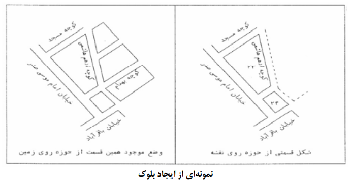
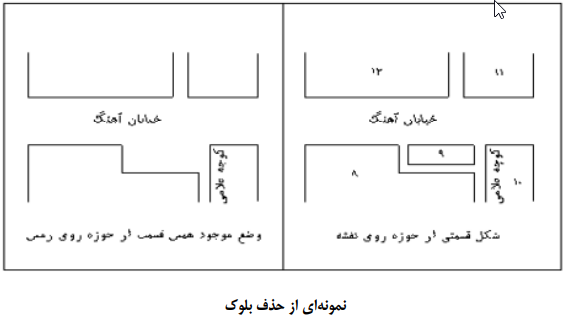
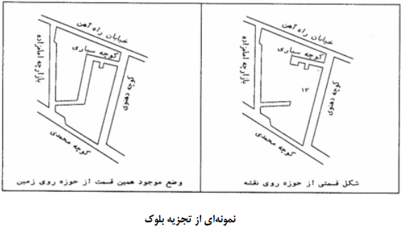
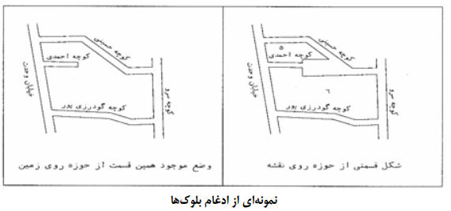

1 - ايجاد (به وجود آمدن بلوك جديد در اثر ايجاد ساختمان هاي جديد) :
اگر در حين فهرست برداري با بلوكي مواجه شديد كه در نقشه وجود ندا شت ضمن هماهنگي با كار شناس مسئول و مامور سرشماري حوزه مجاور و اطمينان از اينكه بلوك جديد است لازم است فهرست برداري بلوك ايجاد شده را در ادامه بلوك قبلي انجام دهيد و مكان هاي بلوك جديد را فهرست كنيد. در صـــورتي كه بين حوزه هاي مجاور بلوك جديدي ايجاد شـــده بود، کارشناس مسئول را مطلع سازید و با هماهنگي كارشناس نقشه و اطمينان از اينكه بلوك جديد مي باشد، آن بلوك را به يكي از حوزه ها اختصاص دهد و مامور آن حوزه نسبت به سرشماري آن بلوك اقدام نمايد.

2 - حذف (از بين رفتن بلوك در اثر تخريب ساختمان ها) :
اگر در زمان فهرســـت برداري تمام بلوك در اثر تخريب از بين رفته باشـــد پس از بررســي و هماهنگي با كارشــناس مســئول و اطمينان از حذف بلوك، يك رديف در فرم فهرست برداري تكميل كنيد و در توضيحات بنويسيد" اين بلوك حذف شده است".

3 - تجزيه (تقسيم شدن بلوك به دو يا چند بلوك در اثر ايجاد معابر جديد) :
اگر در حين فهرست برداري بلوكي در اثر ايجاد معابر جديد، به دو يا چند بلوك تقسيم شده با شد ادامه فهرست برداري را بدون توجه به تجزيه و مانند يك بلوك انجام دهيد. در اين حالت دقت نماييد تمامي مكانه اي بلوك هاي حاصـــل از تجزيه را به صـــورت بلوك گردشي فهرست نماييد.

4 - ادغام (يكي شدن چند بلوك در اثر ايجاد ساخت و ساز):
اگر در حين فهرست برداري دو يا چند بلوك به علت ساخت و ساز در بين آنها، به يكديگر متصل شده و يك بلوك را تشكيل داده باشند، اين حالت ادغام ناميده ميشود. در اين حالت ادامه فهرست برداري را بدون توجه به ادغام، براي بلوك با شماره كوچكتر انجام دهيد و براي ساير بلوكها ادغام شده تنها يك رديف در فرم فهرست برداري تكميل كنيد و در توضيحات به ادغام شدن بلوك هاي مورد نظر اشاره كنيد. به عنوان نمونه اگر بلوكهاي 5 و 6 با هم ادغام شده باشند پس از آنكه تمام مكان ها را در بلوك 5 فهرست برداري كرديد براي بلوك 6 يك سطر فهرست برداري اختصاص دهيد و در قسمت توضيحات بنويسيد اين بلوك در بلوك 5 ادغام شده است.
